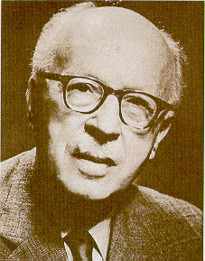

Lavoslav (Leopold) Ružička (Vukovar, 13. rujna 1887. – Mammern, Švicarska, 26. rujna 1976.) dobitnik je Nobelove nagrade za kemiju,
te je prvi hrvatski dobitnik te nagrade.
Nositelj je osam počasnih doktorata
(četiri za znanost, dva za medicinu, te po jedan za prirodoslovne znanosti i pravo).

Najvažnija postignuća
- Otkriće makrocikličkih spojeva
- Sinteza muških spolnih hormona
- Istraživanje viških terpena
Kontakt: lavoslav.ruzicka@gmail.com